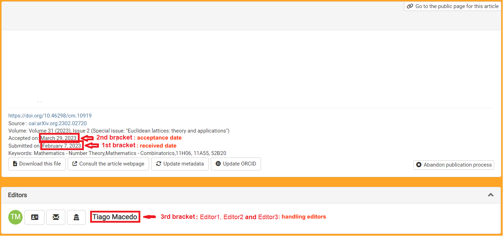
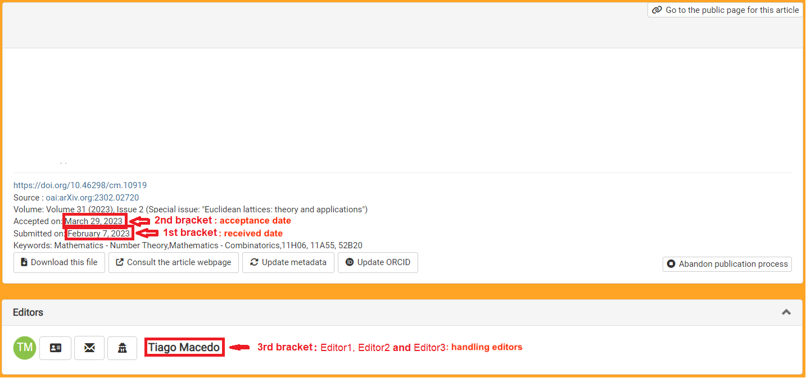
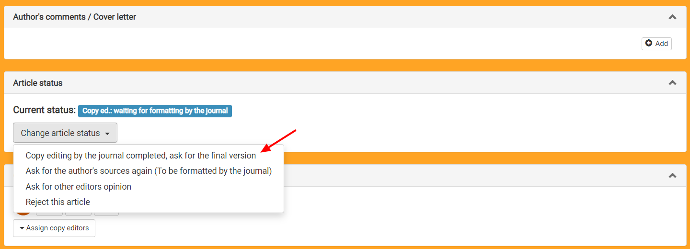

Communications in Mathematics
Technical editing process
Intro
The main goal of the technical editorial process is to fit all the articles that are published by Communications in Mathematics into the same standards. To do that the technical editors will edit the source files sent by the authors and modify the parts that do not adhere to the format of the journal. More details about this process are contained in the steps below.
Step 1: review the manuscript
Within two days after the authors have responded to the request to submit their source files, double-check the following:
- Spell and grammar. My suggestion is that you use a large language model (such as ChatGPT, Deepseek, ...) to help you review the text. Here is a suggested prompt that you can use: "Assume you are a copy editor. I would like you to review the punctuation and spelling of the attached scientific article. Please note that this is a scientific article in the field of Mathematics and is written in English. Please, return to me all the instances in the text of this article where there is a typographical or punctuation error."
- Change every sentence starting with a mathematical formula. My suggestion is that you search for . $ in the tex file and rephrase those sentences.
- Change every sentence containing mathematical formulas that break between two lines. My suggestion is that you: use a display \[ ... \], or reorder, or rephrase those sentences.
- Avoid inline formulas longer than half of a line by using math displays \[ ... \] instead.
- Always use the enumerate and itemize environments for lists.
- Instead of numbering equations or citing a reference by hand (using parenthesis or brackets), use \cite, \ref and \eqref.
- Clear all the errors, warnings, overfull and underfull boxes.
Step 2: send pdf to the authors
As soon as you are done reviewing the authors' files send them back to the authors, asking if there are any further changes that they would like you to make.
Here is a template email that you can use:
Dear author,
Thank you for sending your manuscript.
I am attaching to this email an updated version of your article. If there is
anything you would like us to change, please let us know within 2 days.
Best regards,
<your name>
Technical editor of Communications in Mathematics
Make sure you attach only the pdf file of their manuscript to this email.
Step 3: make final edits
When the authors and you agree with all the edition of their article, it is time to do the final editing of their manuscript.
First, add the following lines right before \begin{document}:
\YEAR{<volume year>}
\ISSUE{<issue number>}
\NUMBER{<ask head technical editor>}
\DOI{https://doi.org/10.46298/cm.<id of the paper>}
\licence{< licence's name >}
\editinfo{<received date>}{<acceptance date>}{<handling editor>}
 

Lastly, replace \bibliography{cimart} in the tex file by the contents of the .bbl file that is created during compilation. (This is important in order to avoid problems when arXiv compiles the tex file.)
Step 4: ask the editors to double-check the final version
Once you have finished editing the authors' manuscript, send an email to the Editor-in-Chief and the handling editors of the article asking them to double-check the final version of the article.
Here is a template email that you can use:
Dear editors,
I have just finished editing the attached article and would like to ask
you to double-check it before I send the source files to the authors.
Please, let me know if you would like me to make any changes to the
article or if you approve this version within the next 2 days.
Best regards,
<your name>
Technical editor of Communications in Mathematics
Make sure you attach the pdf of the final version of the article.
Step 5: change the status of the submission
Once all the editors have approved the final version of the article, change the status of the submission on the Episciences platform.
Step 6: send source files to the authors
Send the source files to the authors asking for them to update their post on arXiv and their submission on Episciences. Here is a template email that you can use:
Dear author,
Thank you for your response.
Now, I would like to ask you to update your posting on arXiv to its final
version (see attached files). Please, do not make a new posting, as
Episciences uses the id of the posting on arXiv that was informed during
submission.
I would also like to suggest that you remove all content from the "comment"
section, as it may be merged with the abstract of your article in the
journal's webpage.
As soon as your article is updated on arXiv, please inform its final version
on the Episciences platform.
Best regards,
<your name>
Technical editor of Communications in Mathematics
Make sure you attach the tex file of the final version, together with: 00README.json, cimart.cls, episciences.eps and any other file (figures, etc) that the authors (and arXiv) may need to successfully compile the tex file.
General suggestions:
- Be kind and patient.
- Never change the files: cimart.cls, episciences.eps and 00README.json.
-
Always use the latest versions of these files; see
www.overleaf.com/read/hxycsnytwjcm#90fd42. - Do not ask the authors to perform more than one action in the same email.